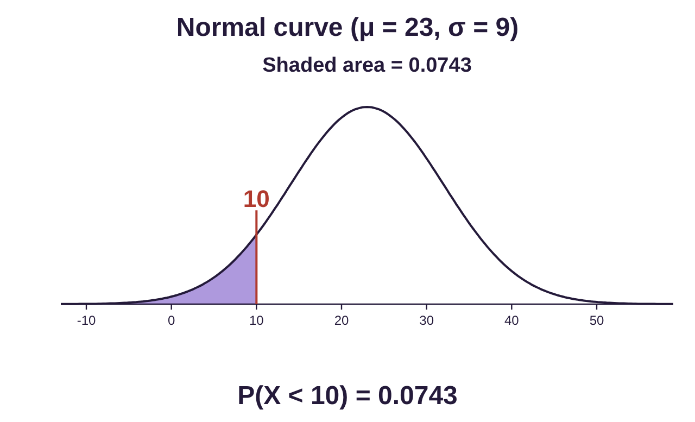
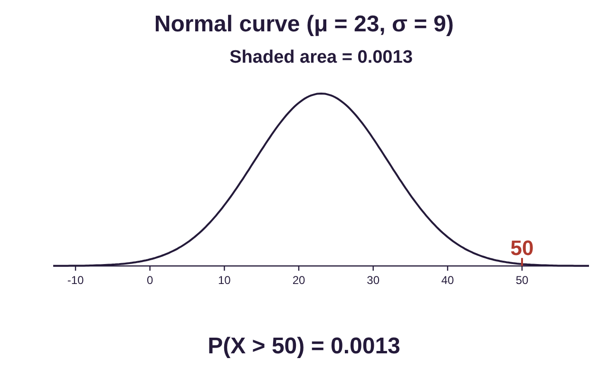
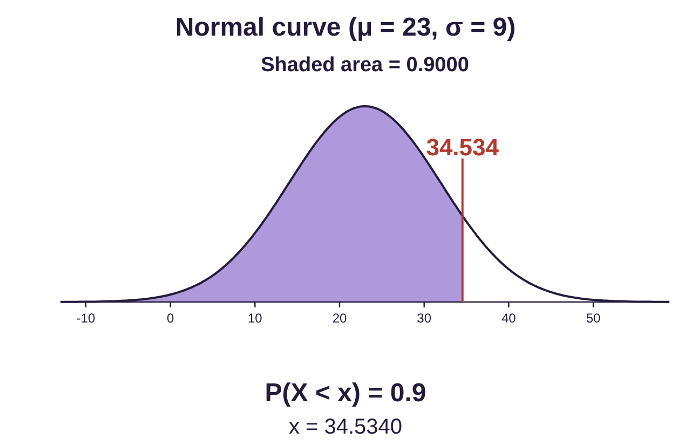
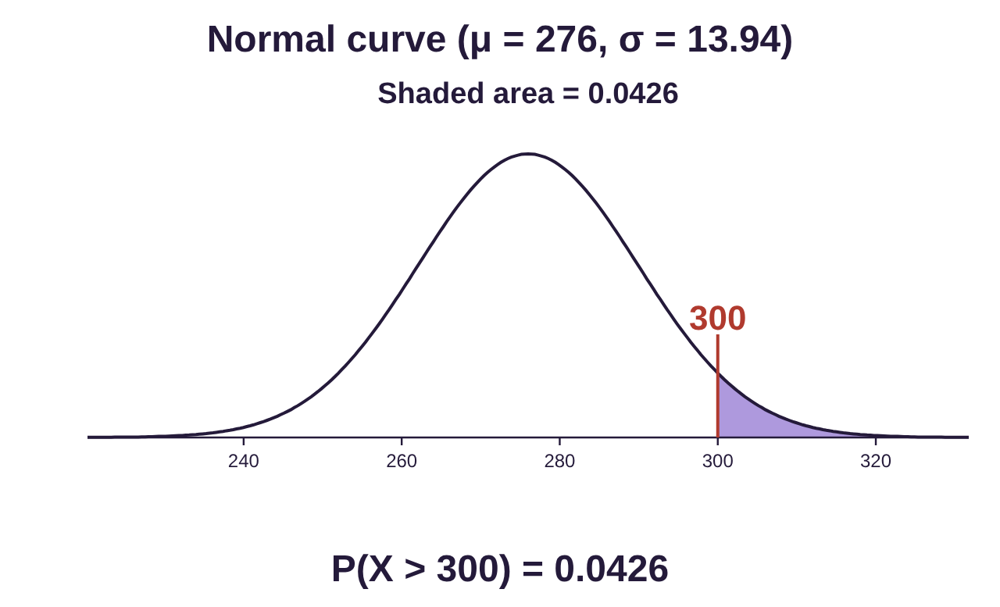
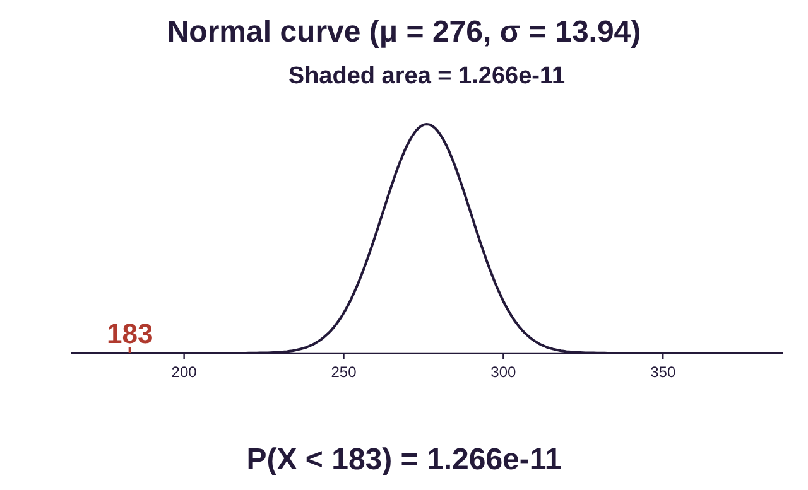
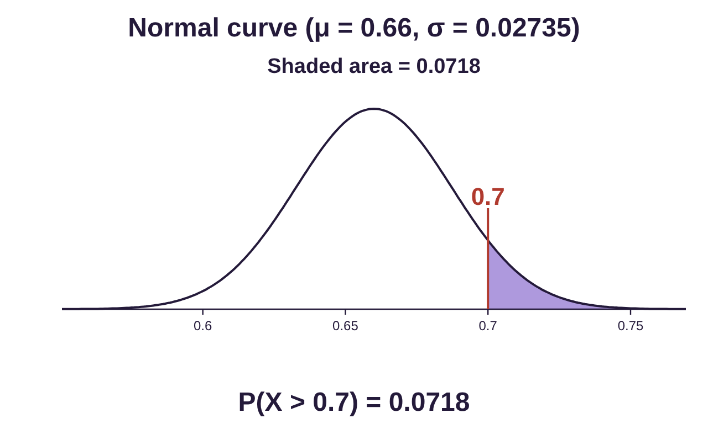
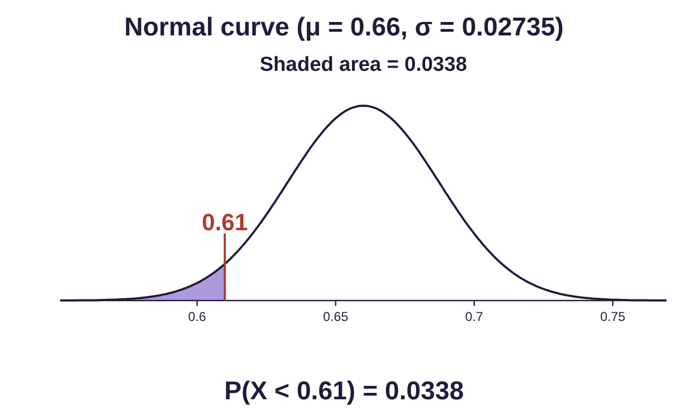
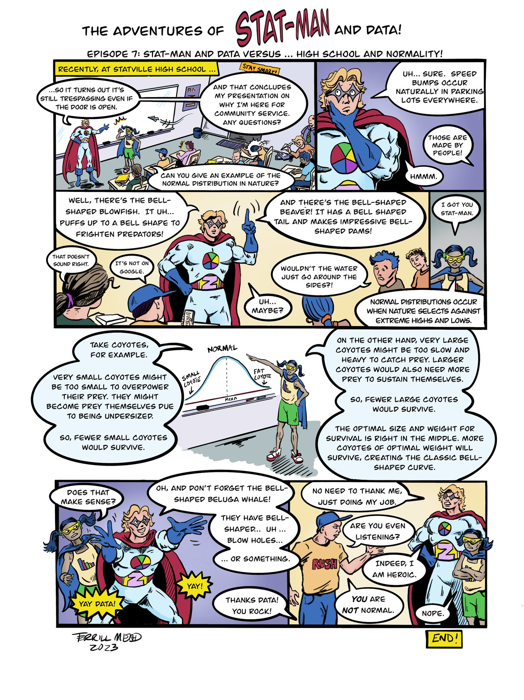

Section 7.5: Summary of Applications of the Normal Distribution
Learning Objectives
1.Determine when the normal distribution and sampling distributions apply.
2.Use the normal and sampling distributions to compute probability.
This section is a summary of the applications of the normal distribution. As you read through this chapter, it is easy to become confused. Understanding which distribution is appropriate to the situation is essential to solving problems correctly.
In this chapter we have studied the following applications of the normal distribution:
•Finding probability using a normal distribution.
•Finding percentiles using a normal distribution.
•The distribution of sample means.
•The distribution of sample proportions.
This section is designed to assist you in determining which distribution and method is appropriate. See figure 7.33 for a flowchart summarizing the ways we have used the normal distribution in this chapter. The binomial and uniform distributions also appeared in this chapter but are not summarized here.
![Figure 7.33: Flowchart of uses of the normal distribution in chapter 7. Start: Are you asked to find a probability or percentile? Then: Are there samples of size n? No (Section 7.2): Is X normally distributed with mean μ and standard deviation σ? If X is normal, use STATBELT and the Normal Calculator or another probability app with the mean and standard deviation given to find a probability or percentile. Yes: Is the question about sample means or about sample proportions? Sample means (Section 7.3): given samples of size n and a parent distribution with mean μ and StDev σ, the variable is X̄, its mean is μ, its StDev is σ/√n, and it is normal if either X is normal or n ≥ 30; if X̄ is normal, use STATBELT and the Normal Calculator with that mean and standard deviation to find a probability. Sample proportions (Section 7.4): given binomial X with n and p, the variable is p̂ = X/n, its mean is p, its StDev is √(p(1 − p)/n), and it is normal if n·p·(1 − p) ≥ 10; if p̂ is normal, use STATBELT and the Normal Calculator with that mean and standard deviation to find a probability.](images/tk_flow7_33.png)
Figure 7.33: Flowchart of uses of the normal distribution in chapter 7.
Example 1: 2021 Impulse Purchases
According to a Slickdeals.net survey (opens in a new tab), Americans spent an average of $23 per impulse purchase in 2021. Assume that the standard deviation of an impulse purchase is $9, and that the amount spent is normally distributed.
a)What is the probability that a consumer will spend less than $10 on an impulse purchase?
b)What is the probability that a consumer will at least $50 on an impulse purchase?
c)What is the 90th percentile for the amount spent on an impulse purchase?
Solution:This problem gives us information about American spending on impulse purchases. There are no samples being taken, so we are not dealing with sampling distributions. What is given is a normal distribution with mean and standard deviation . So, this is the left branch of the flowchart and is a section 7.2 problem. We will solve it using the normal calculator.
a)What is the probability that a consumer will spend less than $10 on an impulse purchase?
Using the Normal Calculator in STATBELT with mean 23 and standard deviation 9, . The interpretation is that about 7.4% of individual impulse purchases were for items that cost $10 or less.
Photo by Joshua Fernandez (opens in a new tab) on Unsplash (opens in a new tab)

b)What is the probability that a consumer will spend at least $50 on an impulse purchase?
Using the Normal Calculator in STATBELT, . The interpretation is that about 0.1% of individual impulse purchases were for items that cost $50 or more. This suggests that it is rare to spend larger sums on impulse. When most consumers spend greater amounts, they tend to think more carefully about those purchases.

c)What is the 90th percentile for the amount spent on an impulse purchase?
Once again, we use the normal calculator, this time for a percentile. Since we want to find , we want the area on the left, or the probability on the left, to be 0.90. In the calculator, choose “P(X < _) = a” under “Find a value from an area” and set the area to 0.90.
STATBELT computes the 90th percentile to be $34.53. The interpretation is that 90% of impulse purchases are for items that cost less than $34.53, and any impulse purchase for more than $34.53 is in the top 10% of impulse purchase costs.
Photo by Brooke Cagle (opens in a new tab) on Unsplash (opens in a new tab)

Example 2: 2021 Monthly Online Impulse Purchases
According to a Slickdeals.net survey (opens in a new tab), Americans spent an average of $276 per month for impulse purchases in 2021. Assume that the standard deviation of monthly spending on impulse purchases is $108. Samples of 60 consumers are randomly selected and their spending on impulse purchases is recorded.
a)Describe the distribution of sample mean impulse spending for samples of 60 consumers.
b)What is the probability that a sample of 60 consumers will average at least $300 per month on impulse purchases?
c)In 2020, the average amount spent on impulse purchases was $183 per month. In 2021, would it be unusual to have a sample of 60 consumers with mean impulse spending $183 per month or less?
Solution:In this problem, a description of consumer spending is given with a mean and standard deviation, but no description of the shape of the distribution. The question states that samples of size n = 60 are randomly selected, meaning this is a sampling distribution question. Following the flowchart, we must determine whether this question is about the distribution of sample means (section 7.3) or the distribution of sample proportions (section 7.4). But part (a) clearly asks us to describe the distribution of sample means of 60 consumers, so this is a 7.3 question, and we will follow the second branch of the flowchart.
a)Describe the distribution of sample mean impulse spending for samples of 60 consumers.
The parent distribution for X = amount spent by consumers on impulse purchases has mean dollars and standard deviation dollars. The shape of the distribution is not stated.
The distribution of sample means, , of samples of size n = 60 has the same mean, The standard deviation is
We don’t know whether the original distribution is normally distributed, but , so is automatically normally distributed. The distribution for = the mean amount spent on impulse purchases in samples of 60 consumers:
• has mean
• has standard deviation
• is normally distributed
b)What is the probability that a sample of 60 consumers will average at least $300 per month on impulse purchases?
Now, since is normally distributed, we use the normal calculator with mean and standard deviation . The probability that a sample would have mean spending of at least $300 is . This is less than 5%, so it would be unusual to have a sample of 60 consumers who spent more than $300 per month on impulse purchases.

c)In 2020, the average amount spent on impulse purchases was $183 per month. In 2021, would it be unusual to have a sample of 60 consumers with mean impulse spending less than or equal to $183 per month?
The probability that a sample would have mean spending of less than $183 is .
Photo by Boxed Water Is Better (opens in a new tab) on Unsplash (opens in a new tab)

There is about a one in 100 billion chance this sample would occur randomly in 2021. It is far more likely that the spending habits of consumers have changed since 2020. In fact, for much of 2020, consumers were stuck at home without access to impulse purchases, except online. In 2021, consumers had more access to traditional in-person shopping as well as online, which can explain some of the additional impulse spending. There is also the phenomenon called COVID fatigue that may have fueled “retail therapy” spending. In any case, we are using data from the two years to infer that there is a difference in spending patterns. More inference is coming up in Unit 3!
Example 3: High School Graduates and College
According to the National Center for Educational Statistics, 66% of high school graduates immediately enrolled in college in 2019. Random samples of 300 high school graduates from 2019 are selected from the population.
a)Describe the distribution of sample proportions of high school graduates who immediately enrolled in college.
b)What is the probability that a sample of 300 will have 70% or more attend college?
c)In 2020, during the pandemic, a sample of 300 high school graduates had only 61% who began college immediately. Would this be considered unusual, based on the distribution for 2019 graduates?
Solution:In this problem, we are given a percentage of a population, which is a proportion, but no mean, no standard deviation, and no description of the shape of a distribution. The question does state that samples of size n = 300 are randomly selected, meaning this is a sampling distribution question. The percentage that is given suggests it could be a proportions problem. In fact, part (a) asks us to describe the distribution of sample proportions, so this is a 7.4 question, and we will follow the right branch of the flowchart. Further, there is no parent distribution described so it is not a question about sample means.
a)Describe the distribution of sample proportions of high school graduates who immediately enrolled in college.
The distribution of sample proportions has n = 300 and p = 0.66, which is 66% written in decimal form. The variable is , which in can be interpreted as a proportion or percent.
•The mean is .
•The standard deviation needs to be calculated:
•To determine the shape, we check if .
Since , the distribution of sampling proportions will have an approximately normal distribution.
So, the distribution of sample proportions is described as follows:
• has mean
• has standard deviation
• is normally distributed
b)What is the probability that a sample of 300 will have 70% or more attend college?
First, 70% = 0.70 = 0.7 as a decimal. So, we wish to find the probability that a sample of 300 students would have 70% or more attend college. Symbolically, that means we want . Since is normally distributed, we use the Normal Calculator in STATBELT, using the mean 0.66 and standard deviation 0.027350.

Choosing “P(X > a)” and typing 0.7 for 70%, we get the probability . There is about a 7.2% chance of obtaining a sample of 300 students who attended college immediately.
c)In 2020, during the pandemic, a sample of 300 high school graduates had only 61% who began college immediately. Would this be considered unusual, based on the distribution for 2019 graduates?
In this case, we will use the normal calculator to calculate the probability that a sample of 300 students would have 61% or less attend college immediately. Here, 61% is written in decimal form as 0.61. Symbolically, we want to find .

Choosing “P(X < a)” and typing 0.61, we get the probability . There is about a 3.4% chance that such a sample would have occurred by random chance in 2019. Since 3.4% is less than 5%, this would be considered unusual when compared to 2019 data. It appears that the number of graduates who enrolled in college immediately in 2020 was unusually low compared to pre-pandemic rates. Again, we are using inference to reach the conclusion that fewer high school graduates attended college immediately in 2020 than in the prior year.
Photo by Pang Yuhao (opens in a new tab) on Unsplash (opens in a new tab)

Text version of the comic
The Adventures of Stat-Man and Data! Episode 7: Stat-Man and Data versus… High School and Normality!
Caption: Recently, at Statville High School…
Stat-Man and Data stand at the whiteboard in front of a classroom of students. One student is asleep, another throws a paper airplane.
Stat-Man: …so it turns out it’s still trespassing even if the door is open.
Stat-Man: And that concludes my presentation on why I’m here for community service. Any questions?
Student: Can you give an example of the normal distribution in nature?
Stat-Man rubs his chin.
Stat-Man: Uh… sure. Speed bumps occur naturally in parking lots everywhere.
Student: Those are made by people!
Stat-Man: Hmmm.
Stat-Man raises one finger.
Stat-Man: Well, there’s the bell-shaped blowfish. It uh… puffs up to a bell shape to frighten predators!
Student: That doesn’t sound right.
Student: It’s not on Google.
Stat-Man: And there’s the bell-shaped beaver! It has a bell shaped tail and makes impressive bell-shaped dams!
Student: Wouldn’t the water just go around the sides?!
Stat-Man: Uh… maybe?
Data: I got you Stat-Man.
Data: Normal distributions occur when nature selects against extreme highs and lows.
Data points to a bell curve drawn on the whiteboard, labeled “Normal”, with “Mean” in the middle, “Small coyote” in the left tail and “Fat coyote” in the right tail.
Data: Take coyotes, for example.
Data: Very small coyotes might be too small to overpower their prey. They might become prey themselves due to being undersized.
Data: So, fewer small coyotes would survive.
Data: On the other hand, very large coyotes might be too slow and heavy to catch prey. Larger coyotes would also need more prey to sustain themselves.
Data: So, fewer large coyotes would survive.
Data: The optimal size and weight for survival is right in the middle. More coyotes of optimal weight will survive, creating the classic bell-shaped curve.
Data: Does that make sense?
Stat-Man waves his arms.
Stat-Man: Oh, and don’t forget the bell-shaped beluga whale!
Stat-Man: They have bell-shaped… uh… blow holes…
Stat-Man: …or something.
Students: Yay Data! Yay!
Student: Thanks Data! You rock!
Stat-Man: No need to thank me, just doing my job.
Student (in a Rush T-shirt): Are you even listening?
Stat-Man: Indeed, I am heroic.
Student: You are NOT normal.
Data (arms crossed): Nope.
END (Signed Terrill Mead, 2023)